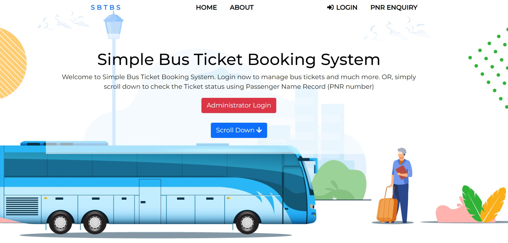
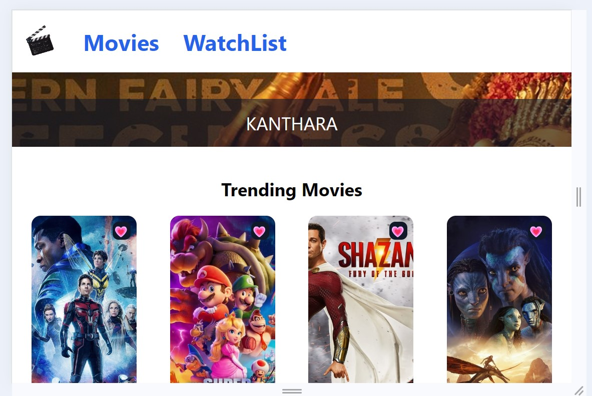

Simple Bus Ticket Booking Management System
The "Online Bus Ticketing System" is designed to streamline the existing manual ticketing process, reducing errors and improving efficiency. This user-friendly software ensures secure and fast management of routes, buses, bookings, and customer information. It provides helpful error messages to guide users and requires no specialized knowledge to operate. By automating ticketing, it allows the company to focus on other important activities, improving resource management. Additionally, the system includes remote access features, making it easier for executives to manage operations on the go, ultimately leading to more effective planning and resource utilization.

IMDb-Clone Web Application
I developed an IMDb-clone web application using React that allows users to browse trending movies, manage a personalized watchlist, and explore movie details. The application features seamless state management, enabling users to filter, search, and sort movies in their watchlist. The watchlist is persisted using local storage, ensuring user preferences are retained across sessions. The project leverages React Router for smooth navigation between pages and Tailwind CSS for responsive and modern styling.